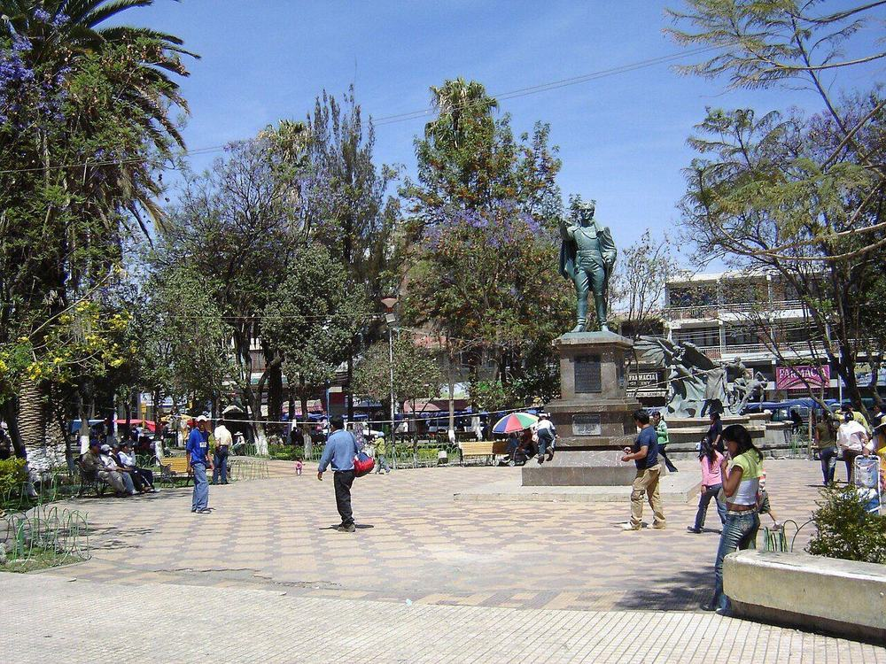

Hablemos
Si quieres inscribir a una niña o niño, sumarte como voluntaria o voluntario, donar o simplemente saber más, escríbenos. Respondemos a la brevedad.
- Dirección
- Calle Innominda s/n, Zona Chilimarca — entre Av. Chilimarca y Calle Innominda. Tiquipaya, Provincia Quillacollo, Cochabamba, Bolivia.
- Teléfonos
- +591 4 311511 · +591 70724456
- Horario de atención
- Lunes a viernes, 09:00 – 17:00
- facebook.com/102844861521761
También puedes pasar directamente por las actividades. La mejor manera de conocernos es vernos trabajar.
Escríbenos
Dónde encontrarnos
Estamos en la zona de Chilimarca, en el municipio de Tiquipaya, a unos 10 km de la ciudad de Cochabamba. La casa es de dos plantas, con pared de ladrillo visto y puerta color café.


Vista aproximada del municipio de Tiquipaya. La dirección exacta figura arriba. Mapa: © colaboradores de OpenStreetMap.
Datos legales
Semillas del CambioRazón social
SEMCASigla
Educación · SaludSector
CochabambaDepartamento
05 · 02 · 2027Registro vigente hasta
VigenteEstado